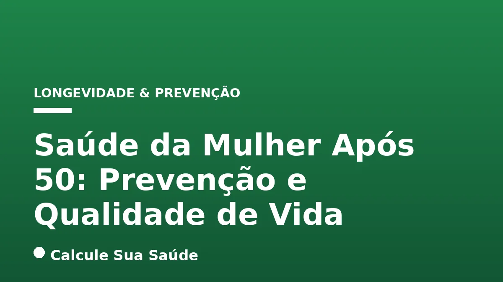

Aviso médico importante
Este conteúdo é educativo e informativo e não substitui a consulta, o diagnóstico ou o tratamento de um profissional de saúde. Em caso de sintomas, procure orientação médica.
Índice do Artigo
- 1. As Mudanças da Menopausa e Pós-Menopausa
- 2. Saúde Óssea: Prevenindo a Osteoporose
- 3. Saúde Cardiovascular na Pós-Menopausa
- 4. Saúde Mental e Bem-Estar Emocional
- 5. Nutrição para a Longevidade e Vitalidade
- 6. Atividade Física: Movimento para a Longevidade
- 7. Sono Reparador: Um Pilar da Saúde
- 8. Exames Preventivos e Rastreamento
- 9. Terapia de Reposição Hormonal (TRH): Benefícios e Riscos
- 10. Saúde Sexual na Pós-Menopausa
- 11. Gerenciamento do Estresse e Saúde Mental
- 12. Prevenção de Quedas e Segurança em Casa
- 13. Saúde Bucal e sua Importância
- 14. A Importância do Acompanhamento Médico Contínuo
- 15. Perguntas frequentes
A transição para a segunda metade da vida traz consigo uma série de mudanças fisiológicas e hormonais significativas para as mulheres. A partir dos 50 anos, muitas mulheres entram ou já estão na fase da menopausa, um período natural que marca o fim da capacidade reprodutiva e pode vir acompanhado de sintomas diversos e aumento do risco para certas condições de saúde. No entanto, essa fase não precisa ser sinônimo de declínio. Com informação adequada e um plano de cuidados focado na prevenção e na promoção do bem-estar, é totalmente possível manter e até melhorar a qualidade de vida, desfrutando de vitalidade e saúde.
Este artigo aprofundado visa oferecer um panorama completo sobre os cuidados essenciais para a saúde da mulher após os 50 anos. Abordaremos as principais alterações que ocorrem no corpo, os desafios mais comuns, as estratégias de prevenção baseadas em evidências científicas e as melhores práticas para cultivar um estilo de vida que promova longevidade, saúde física e mental. Nosso objetivo é empoderar as mulheres com conhecimento para que tomem decisões informadas sobre sua saúde, garantindo uma jornada mais tranquila e prazerosa nesta nova etapa.
É fundamental ressaltar que as informações aqui apresentadas têm caráter educativo e não substituem a consulta médica individualizada. Cada mulher é única, e o acompanhamento profissional é indispensável para um plano de saúde personalizado e eficaz.
Em resumo
- Entender as mudanças hormonais da menopausa e seus impactos no corpo.
- Priorizar a saúde óssea para prevenir osteoporose e fraturas.
- Adotar hábitos para a saúde cardiovascular e reduzir riscos de doenças cardíacas.
- Manter a saúde mental através de estratégias de manejo do estresse e apoio social.
- Realizar exames preventivos regulares para detecção precoce de doenças.
- Adotar um estilo de vida saudável com dieta equilibrada, atividade física e sono de qualidade.
1. As Mudanças da Menopausa e Pós-Menopausa
A menopausa é definida como a ausência de menstruação por 12 meses consecutivos, geralmente ocorrendo entre os 45 e 55 anos. Ela é causada pela diminuição natural da produção de estrogênio e progesterona pelos ovários. Esse declínio hormonal desencadeia uma série de sintomas, que podem variar em intensidade e duração. A pós-menopausa refere-se ao período após a menopausa estabelecida.
Sintomas Comuns da Transição Menopausal
- Ondas de calor (fogachos): Sensação súbita de calor intenso, geralmente começando no peito e subindo para o pescoço e rosto, acompanhada de sudorese.
- Alterações no sono: Insônia, dificuldade para adormecer ou manter o sono, muitas vezes exacerbada pelas ondas de calor noturnas.
- Alterações de humor: Irritabilidade, ansiedade, tristeza e, em alguns casos, sintomas depressivos.
- Ressecamento vaginal e diminuição da libido: A redução do estrogênio afeta a lubrificação e a elasticidade vaginal, podendo causar dor durante o sexo e diminuir o desejo sexual.
- Alterações na pele e cabelos: Pele mais seca, perda de elasticidade e afinamento dos cabelos.
- Aumento de peso: Especialmente na região abdominal, devido a alterações no metabolismo e na distribuição de gordura corporal.
Impactos a Longo Prazo da Deficiência de Estrogênio
Além dos sintomas imediatos, a deficiência crônica de estrogênio na pós-menopausa aumenta o risco de:
- Doenças cardiovasculares: O estrogênio tem um papel protetor sobre o sistema cardiovascular. Sua diminuição pode levar a um aumento da pressão arterial, alterações no perfil lipídico e maior risco de aterosclerose.
- Osteoporose: O estrogênio é crucial para a manutenção da densidade óssea. Sua falta acelera a perda óssea, tornando os ossos mais frágeis e propensos a fraturas.
- Alterações urológicas: A atrofia urogenital pode levar a infecções urinárias recorrentes e incontinência urinária.
2. Saúde Óssea: Prevenindo a Osteoporose
A perda de densidade mineral óssea é uma das consequências mais significativas da menopausa. A osteoporose, caracterizada por ossos frágeis e porosos, aumenta drasticamente o risco de fraturas, especialmente de quadril, coluna e punho. A prevenção e o manejo eficazes são cruciais nesta fase da vida.
Fatores de Risco para Osteoporose
- Idade avançada.
- Histórico familiar de osteoporose ou fraturas.
- Baixo peso corporal.
- Sedentarismo.
- Deficiência de cálcio e vitamina D.
- Tabagismo e consumo excessivo de álcool.
- Uso prolongado de certos medicamentos (como corticoides).
- Menopausa precoce (antes dos 40 anos).
Estratégias de Prevenção e Manejo
A abordagem para manter a saúde óssea envolve múltiplos fatores:
- Nutrição Adequada:
- Cálcio: Essencial para a formação e manutenção óssea. Fontes incluem laticínios, vegetais de folhas verdes escuras, sardinha e alimentos fortificados. A necessidade diária pode aumentar após a menopausa. Consulte sobre cálcio: necessidades, fontes e absorção essencial.
- Vitamina D: Fundamental para a absorção do cálcio. A exposição solar moderada é a principal fonte, mas alimentos como peixes gordurosos e suplementos podem ser necessários.
- Atividade Física Regular: Exercícios com carga (como caminhada, corrida leve) e de força (musculação) estimulam a formação óssea e melhoram o equilíbrio, reduzindo o risco de quedas. O caminhada é uma excelente opção.
- Evitar Fatores de Risco: Parar de fumar e moderar o consumo de álcool.
- Acompanhamento Médico: A densitometria óssea é o exame padrão para diagnóstico. Em casos de risco elevado ou diagnóstico, o médico pode indicar medicamentos específicos e/ou terapia de reposição hormonal.
3. Saúde Cardiovascular na Pós-Menopausa
O risco de doenças cardiovasculares aumenta significativamente nas mulheres após a menopausa. A perda do efeito protetor do estrogênio sobre os vasos sanguíneos e o perfil lipídico contribui para esse cenário. A prevenção é a chave.
Alterações Cardiovasculares Comuns
- Aumento da Pressão Arterial (Hipertensão): Mais comum após os 50 anos.
- Alterações no Perfil Lipídico: Tendência ao aumento do LDL (colesterol ruim) e triglicerídeos, e diminuição do HDL (colesterol bom). O controle do colesterol e triglicerídeos é vital.
- Aterosclerose: Acúmulo de placas de gordura nas artérias, que pode levar a eventos como infarto e AVC.
Estratégias de Prevenção Cardiovascular
- Dieta Saudável: Rica em frutas, vegetais, grãos integrais, proteínas magras e gorduras insaturadas. Limitar o consumo de sódio, açúcares adicionados e gorduras saturadas/trans. Evitar alimentos ultraprocessados.
- Atividade Física Regular: Pelo menos 150 minutos de atividade aeróbica moderada por semana (caminhada, natação, ciclismo) e exercícios de força.
- Controle do Peso Corporal: Manter um peso saudável, especialmente evitando o acúmulo de gordura abdominal.
- Não Fumar: O tabagismo é um dos maiores fatores de risco.
- Moderação no Álcool: O consumo excessivo prejudica a saúde cardiovascular. Saiba mais sobre álcool e fígado.
- Gerenciamento do Estresse: O estresse crônico impacta negativamente a saúde do coração.
- Check-ups Regulares: Monitorar pressão arterial, níveis de colesterol, triglicerídeos e glicose.
4. Saúde Mental e Bem-Estar Emocional
As mudanças hormonais, os desafios físicos e as transições sociais que podem ocorrer após os 50 anos podem impactar significativamente a saúde mental e o bem-estar emocional das mulheres. É crucial dedicar atenção a essa dimensão da saúde.
Desafios Comuns
- Ansiedade e Depressão: As flutuações hormonais, o estresse e a adaptação a novas fases da vida podem aumentar a vulnerabilidade a transtornos de humor. É importante buscar ajuda se sintomas como tristeza persistente, perda de interesse, irritabilidade ou preocupação excessiva surgirem. Entenda mais sobre ansiedade: sintomas e quando procurar ajuda e depressão: sintomas, causas, tipos e tratamentos.
- Estresse Crônico: A sobrecarga de responsabilidades (carreira, família, cuidados com pais idosos) pode levar ao estresse crônico, com consequências negativas para a saúde física e mental. O burnout é uma condição relacionada.
- Mudanças na Autoestima e Imagem Corporal: Alterações físicas e sociais podem afetar a percepção de si mesma.
Estratégias para Promover o Bem-Estar
- Prática de Mindfulness e Meditação: Técnicas que ajudam a reduzir o estresse, a ansiedade e a melhorar o foco.
- Atividade Física Regular: Além dos benefícios físicos, o exercício libera endorfinas, que melhoram o humor. O alongamento e mobilidade também são importantes.
- Sono de Qualidade: Priorizar uma rotina de sono regular e um ambiente propício ao descanso.
- Conexões Sociais: Manter relacionamentos saudáveis e participar de atividades sociais.
- Hobbies e Interesses: Dedicar tempo a atividades prazerosas e que tragam satisfação.
- Buscar Apoio Profissional: Terapia psicológica pode ser fundamental para lidar com desafios emocionais e psicológicos.
5. Nutrição para a Longevidade e Vitalidade
Uma alimentação equilibrada e rica em nutrientes é um dos pilares para a saúde e qualidade de vida após os 50 anos. As necessidades nutricionais podem mudar, e a atenção à qualidade dos alimentos torna-se ainda mais importante.
Princípios de uma Dieta Saudável na Pós-Menopausa
- Foco em Alimentos Integrais: Priorizar frutas, vegetais, legumes, grãos integrais, proteínas magras (peixe, frango, leguminosas) e gorduras saudáveis (azeite, abacate, oleaginosas).
- Cálcio e Vitamina D: Essenciais para a saúde óssea, como já mencionado.
- Fibras: Importantes para a saúde digestiva, controle glicêmico e saciedade. Fontes incluem frutas, vegetais, grãos integrais e leguminosas.
- Proteínas: Necessárias para a manutenção da massa muscular, que tende a diminuir com a idade (sarcopenia).
- Hidratação: Beber água suficiente ao longo do dia é crucial para todas as funções corporais.
- Moderação em Açúcares e Sódio: O consumo excessivo está associado a diversos problemas de saúde, como diabetes, hipertensão e ganho de peso. Entenda os efeitos do açúcar no corpo.
- Evitar Ultraprocessados: Alimentos com listas de ingredientes longas e complexas geralmente são pobres em nutrientes e ricos em aditivos, gorduras ruins e açúcares. Veja os riscos e como identificá-los.
Considerações sobre Suplementação
Embora uma dieta balanceada deva ser a principal fonte de nutrientes, a suplementação pode ser considerada em casos de deficiência comprovada ou dificuldade em atingir as necessidades por meio da alimentação. Cálcio, vitamina D e ômega-3 são exemplos de suplementos frequentemente discutidos. Qualquer suplementação deve ser orientada por um profissional de saúde.
6. Atividade Física: Movimento para a Longevidade
Manter-se ativa fisicamente é fundamental para a saúde da mulher após os 50 anos, oferecendo benefícios que vão muito além do controle de peso.
Tipos de Exercícios e Seus Benefícios
- Exercícios Aeróbicos (Cardiovasculares): Caminhada, corrida leve, natação, ciclismo, dança. Melhoram a saúde do coração, controlam a pressão arterial, auxiliam no controle do peso e melhoram o humor. A caminhada é acessível e eficaz.
- Exercícios de Força (Musculação/Resistência): Essenciais para combater a sarcopenia (perda de massa muscular), fortalecer os ossos, melhorar o metabolismo e a funcionalidade.
- Exercícios de Flexibilidade e Equilíbrio: Yoga, Pilates, tai chi chuan. Ajudam a manter a mobilidade articular, prevenir quedas e reduzir o risco de lesões. O alongamento e mobilidade são importantes componentes.
Recomendações Gerais
A Organização Mundial da Saúde (OMS) recomenda para adultos:
- Pelo menos 150 a 300 minutos de atividade aeróbica de intensidade moderada por semana, ou 75 a 150 minutos de atividade de intensidade vigorosa.
- Exercícios de fortalecimento muscular que envolvam os principais grupos musculares em 2 ou mais dias por semana.
É importante começar gradualmente, respeitar os limites do corpo e, se possível, ter a orientação de um profissional de educação física para um plano de treino seguro e eficaz.
7. Sono Reparador: Um Pilar da Saúde
A qualidade do sono pode ser afetada pelas mudanças hormonais da menopausa, mas um sono reparador é vital para a recuperação física e mental, regulação hormonal, função cognitiva e bem-estar geral.
Impactos da Má Qualidade do Sono
- Piora dos fogachos e outros sintomas da menopausa.
- Aumento do risco de acidentes (devido à sonolência).
- Prejuízo da memória e concentração.
- Alterações de humor, aumento da irritabilidade.
- Comprometimento do sistema imunológico.
- Aumento do risco de doenças crônicas (obesidade, diabetes, doenças cardiovasculares).
Estratégias para Melhorar o Sono (Higiene do Sono)
- Estabelecer uma Rotina: Ir para a cama e acordar nos mesmos horários, mesmo nos fins de semana.
- Ambiente Propício: Quarto escuro, silencioso e com temperatura agradável.
- Evitar Estimulantes: Cafeína e nicotina, especialmente no final do dia.
- Limitar Telas Antes de Dormir: A luz azul emitida por celulares, tablets e computadores pode interferir na produção de melatonina.
- Atividade Física Regular: Mas evitar exercícios intensos perto da hora de dormir.
- Relaxamento Pré-Sono: Um banho morno, leitura leve ou meditação podem ajudar.
- Evitar Refeições Pesadas e Álcool à Noite.
8. Exames Preventivos e Rastreamento
A detecção precoce de doenças é fundamental para aumentar as chances de sucesso no tratamento e preservar a qualidade de vida. Mulheres acima de 50 anos devem estar atentas aos exames de rastreamento recomendados.
Exames Essenciais
- Mamografia: Rastreamento para o câncer de mama. Geralmente recomendada anualmente ou a cada dois anos, dependendo das diretrizes e do risco individual.
- Densitometria Óssea: Avalia a densidade mineral óssea para diagnóstico e acompanhamento da osteoporose.
- Exames Ginecológicos: Papanicolau (rastreamento de câncer de colo de útero, embora a incidência em mulheres acima de 50 sem histórico seja menor, o acompanhamento pode ser indicado) e avaliação clínica.
- Colonoscopia: Rastreamento para o câncer colorretal. Geralmente iniciada aos 45-50 anos, dependendo das diretrizes.
- Exames Cardiovasculares: Monitoramento da pressão arterial, perfil lipídico (colesterol e triglicerídeos), glicemia. Eletrocardiograma (ECG) e outros exames podem ser indicados pelo médico.
- Avaliação Oftalmológica: Rastreamento para glaucoma e outras doenças oculares.
- Avaliação Auditiva: Perda auditiva pode se tornar mais comum com a idade.
- Check-up Geral: Avaliação clínica completa, incluindo exames de sangue para verificar função renal, hepática, tireoidiana, níveis de vitaminas, etc. Consulte sobre check-up médico.
A frequência e a indicação de cada exame devem ser discutidas com o médico, que considerará o histórico de saúde individual, fatores de risco e diretrizes médicas atualizadas.
9. Terapia de Reposição Hormonal (TRH): Benefícios e Riscos
A Terapia de Reposição Hormonal (TRH) é uma opção para aliviar sintomas moderados a graves da menopausa, como ondas de calor intensas e ressecamento vaginal. No entanto, seu uso requer avaliação médica criteriosa devido aos potenciais riscos e benefícios.
Indicações e Benefícios da TRH
- Alívio de ondas de calor e suores noturnos.
- Melhora do ressecamento vaginal, dor durante o sexo e sintomas do trato urinário.
- Pode ajudar a manter a densidade óssea, reduzindo o risco de osteoporose.
- Em alguns casos, pode melhorar o humor e o sono.
Riscos e Contraindicações
A TRH não é isenta de riscos e pode aumentar a probabilidade de:
- Trombose venosa profunda e embolia pulmonar (principalmente com estrogênio oral).
- Acidente Vascular Cerebral (AVC).
- Câncer de mama (o risco é complexo e depende do tipo de hormônio, dose, duração do uso e fatores individuais).
- Câncer de endométrio (se o estrogênio for usado isoladamente em mulheres com útero).
A TRH é contraindicada em mulheres com histórico de câncer de mama, trombose, doenças hepáticas ativas, sangramento vaginal não diagnosticado, entre outras condições. A decisão de iniciar a TRH deve ser individualizada, pesando os benefícios para alívio dos sintomas contra os riscos potenciais, e sempre sob supervisão médica.
10. Saúde Sexual na Pós-Menopausa
A sexualidade é uma parte importante da qualidade de vida em todas as fases da vida. Após os 50 anos, mudanças físicas e psicológicas podem afetar a vida sexual, mas com informação e diálogo, é possível manter uma vida sexual satisfatória.
Alterações Comuns
- Ressecamento Vaginal: Causado pela diminuição do estrogênio, pode levar a desconforto e dor durante a relação sexual (dispareunia).
- Diminuição da Libido: Pode ser influenciada por fatores hormonais, psicológicos, relacionais e pelo estresse.
- Alterações no Orgasmo: Algumas mulheres relatam que o orgasmo se torna menos intenso ou demora mais para ser atingido.
- Menor Turgidez e Lubrificação: A resposta sexual pode ser mais lenta.
Estratégias para uma Vida Sexual Saudável
- Lubrificantes Vaginais: Produtos à base de água ou silicone podem aliviar o desconforto do ressecamento.
- Hidratantes Vaginais: Usados regularmente, ajudam a manter a hidratação da mucosa vaginal.
- Terapia Hormonal Local: Cremes, anéis vaginais ou comprimidos com estrogênio em baixa dose podem ser prescritos pelo médico para tratar a atrofia urogenital.
- Comunicação Aberta: Conversar com o(a) parceiro(a) sobre desejos, necessidades e dificuldades é fundamental.
- Exploração e Autoconhecimento: Continuar a explorar o próprio corpo e o que traz prazer.
- Acompanhamento Médico: Discutir quaisquer preocupações com o ginecologista ou outro profissional de saúde.
11. Gerenciamento do Estresse e Saúde Mental
O estresse crônico pode ter um impacto devastador na saúde física e mental, especialmente durante as transições da vida após os 50 anos. Aprender a gerenciá-lo é essencial para o bem-estar.
Consequências do Estresse Crônico
- Agravamento de sintomas da menopausa (ondas de calor, distúrbios do sono).
- Aumento do risco de doenças cardiovasculares.
- Comprometimento do sistema imunológico.
- Problemas digestivos.
- Dores de cabeça e musculares.
- Impacto negativo na saúde mental (ansiedade, depressão, irritabilidade).
- Piora da qualidade do sono.
Técnicas de Gerenciamento do Estresse
- Exercício Físico Regular: Uma das formas mais eficazes de combater o estresse.
- Técnicas de Relaxamento: Respiração profunda, meditação, mindfulness, yoga.
- Priorizar o Sono: Um sono reparador é crucial para a resiliência ao estresse.
- Estabelecer Limites: Aprender a dizer não e delegar tarefas quando possível.
- Buscar Apoio Social: Conversar com amigos, familiares ou grupos de apoio.
- Hobbies e Atividades Prazerosas: Dedicar tempo a atividades que tragam alegria e relaxamento.
- Acompanhamento Psicológico: Um terapeuta pode oferecer ferramentas e estratégias personalizadas para lidar com o estresse e outras questões emocionais.
12. Prevenção de Quedas e Segurança em Casa
Com o avanço da idade, o risco de quedas aumenta devido a fatores como diminuição da força muscular, alterações no equilíbrio, problemas de visão e possíveis efeitos colaterais de medicamentos. Quedas podem levar a fraturas graves e perda de independência.
Fatores de Risco para Quedas
- Fraqueza muscular.
- Problemas de equilíbrio e coordenação.
- Visão deficiente.
- Uso de medicamentos que causam tontura ou sonolência.
- Doenças crônicas (artrite, diabetes, doenças neurológicas).
- Ambientes domésticos inadequados (tapetes soltos, iluminação deficiente, pisos escorregadios).
Medidas de Prevenção
- Fortalecimento Muscular e Equilíbrio: Através de exercícios regulares, como os de força e os de equilíbrio (yoga, tai chi).
- Avaliação da Visão: Manter consultas oftalmológicas regulares e usar óculos prescritos.
- Revisão de Medicamentos: Discutir com o médico sobre possíveis efeitos colaterais de medicamentos que afetam o equilíbrio.
- Adaptações em Casa:
- Instalar barras de apoio no banheiro (box, ao lado do vaso sanitário).
- Usar tapetes antiderrapantes no banheiro e cozinha.
- Garantir boa iluminação em todos os cômodos, especialmente em escadas e corredores.
- Remover obstáculos do caminho (fios, tapetes soltos).
- Usar calçados adequados e com sola antiderrapante.
- Hidratação Adequada: A desidratação pode causar tontura.
13. Saúde Bucal e sua Importância
A saúde bucal está intrinsecamente ligada à saúde geral. Mudanças hormonais e o envelhecimento podem afetar a boca, aumentando o risco de problemas como gengivite, periodontite e boca seca.
Alterações Bucais na Pós-Menopausa
- Boca Seca (Xerostomia): A diminuição da produção salivar pode ocorrer devido a fatores hormonais, medicamentos ou condições de saúde. A saliva é importante para limpar a boca, neutralizar ácidos e prevenir cáries.
- Gengivite e Periodontite: A inflamação e infecção das gengivas e estruturas de suporte dos dentes podem piorar com as alterações hormonais e a diminuição da resposta imune. A doença periodontal está associada a outros problemas de saúde, como doenças cardiovasculares e diabetes.
- Aumento do Risco de Cáries: A boca seca e a gengivite aumentam a suscetibilidade a cáries.
- Alterações no Paladar: Algumas mulheres relatam mudanças na percepção dos sabores.
Cuidados Essenciais
- Higiene Bucal Rigorosa: Escovação diária com creme dental com flúor e uso de fio dental.
- Visitas Regulares ao Dentista: Para check-ups, limpezas profissionais e detecção precoce de problemas.
- Hidratação: Beber água frequentemente para combater a boca seca.
- Uso de Saliva Artificial ou Estimulantes Salivares: Se a boca seca for persistente, sob orientação profissional.
- Evitar Tabaco e Moderação no Álcool: Ambos prejudicam a saúde bucal.
- Dieta Equilibrada: Limitar o consumo de açúcares.
14. A Importância do Acompanhamento Médico Contínuo
Nenhum guia pode substituir a avaliação e o acompanhamento individualizado por profissionais de saúde. A consulta regular é a pedra angular de um plano de saúde eficaz e personalizado.
Por Que o Acompanhamento Médico é Crucial?
- Diagnóstico e Tratamento Personalizado: Cada mulher tem um histórico, genética e estilo de vida únicos. O médico pode diagnosticar condições precocemente e propor tratamentos adaptados às suas necessidades.
- Monitoramento de Condições Crônicas: Doenças como hipertensão, diabetes, dislipidemia e osteoporose requerem acompanhamento contínuo para controle e prevenção de complicações.
- Orientação sobre Prevenção: O médico pode guiar sobre os exames de rastreamento necessários, vacinação e estratégias de estilo de vida mais adequadas.
- Gerenciamento de Sintomas: Alívio de sintomas da menopausa e de outras condições que afetam a qualidade de vida.
- Discussão sobre Opções Terapêuticas: Como a TRH, suplementação e outras intervenções médicas.
- Saúde Mental: O médico pode identificar sinais de ansiedade, depressão ou outros transtornos e encaminhar para tratamento adequado.
Construindo uma Relação de Confiança
É importante manter um diálogo aberto e honesto com seu médico. Sinta-se à vontade para fazer perguntas, expressar suas preocupações e discutir suas expectativas. Uma parceria sólida entre paciente e médico é fundamental para alcançar e manter a saúde e o bem-estar ao longo da vida.
15. Perguntas frequentes
Quais são os principais riscos à saúde da mulher após os 50 anos?
Os principais riscos incluem doenças cardiovasculares, osteoporose, aumento da incidência de certos tipos de câncer (mama, colorretal), declínio cognitivo e problemas de saúde mental como ansiedade e depressão. A menopausa e suas alterações hormonais contribuem para muitos desses riscos.
A Terapia de Reposição Hormonal (TRH) é recomendada para todas as mulheres na menopausa?
Não. A TRH é indicada para aliviar sintomas moderados a graves da menopausa e deve ser cuidadosamente avaliada pelo médico, considerando os benefícios versus os riscos individuais. Não é recomendada para todas as mulheres.
Qual a importância da atividade física para mulheres acima de 50 anos?
A atividade física é crucial para manter a massa muscular, a densidade óssea, a saúde cardiovascular, controlar o peso, melhorar o humor e a qualidade do sono. Ajuda a prevenir quedas e a manter a independência funcional.
Como a alimentação pode ajudar na prevenção de doenças após os 50?
Uma dieta rica em nutrientes, com foco em frutas, vegetais, grãos integrais, proteínas magras e gorduras saudáveis, ajuda a controlar o peso, a pressão arterial, o colesterol e a glicose, além de fornecer cálcio e vitamina D para a saúde óssea.
É normal ter diminuição do desejo sexual após a menopausa?
Sim, é comum. Mudanças hormonais, ressecamento vaginal, alterações na imagem corporal e fatores psicológicos podem influenciar a libido. Existem tratamentos e estratégias para ajudar a melhorar a vida sexual.
Com que frequência devo fazer exames de rastreamento como mamografia e colonoscopia?
A frequência varia conforme as diretrizes médicas e o risco individual. Geralmente, a mamografia é anual ou bienal, e a colonoscopia é recomendada a partir dos 45-50 anos. Consulte seu médico para um cronograma personalizado.
O que é sarcopenia e como posso preveni-la?
Sarcopenia é a perda progressiva de massa e força muscular associada ao envelhecimento. A prevenção envolve a prática regular de exercícios de força (musculação) e uma ingestão adequada de proteínas na dieta.
Leia também
Referências e Fontes
1. American College of Obstetricians and Gynecologists (ACOG). Menopause and Perimenopause. Disponível em: acog.org
2. National Osteoporosis Foundation. Bone Health & Osteoporosis: Women Over 50. Disponível em: nof.org
3. World Health Organization (WHO). Global recommendations on physical activity for adults. 2020. Disponível em: who.int
4. Mayo Clinic. Menopause. Disponível em: mayoclinic.org
5. North American Menopause Society (NAMS). Menopause Symptoms. Disponível em: menopause.org
6. Sociedade Brasileira de Climatério e Menopausa (SOBRACLEM). Diretrizes Brasileiras de Climatério. 2019.
7. American Heart Association. Cardiovascular Disease in Women. Disponível em: heart.org